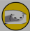
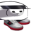
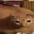
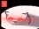
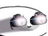

Know that most gwas are known to have a left-facing version of themselves, none are documented here except for the original gwaleft.

Has a childlike innocence and is very kind. Seems to have immense power but is also very reluctant to use the power.
Seems to be exactly like gwa, but its appearance is inverted.

A rare gwacoin.
gwacoins are the official currency of the gwas, and are worth massive amounts of human money.
gwacoins are the official currency of the gwas, and are worth massive amounts of human money.

This gwa has a talent for looking great.
Though gwas do not mate they still have romantic relationships.

This gwa has transcended beyond the gwa realm and fully integrated into the human realm.
Though gwas traditionally face right, facing left was legalized in [???] (gwa years)

This gwa has been enraged by a member of the ping'th cult.

It hates starboard.
Perhaps you'd like to take a break from reading this to join it?

This gwa accepts everything it is asked.
It is very strange and doesn't behave like other gwas.
It is incredibly strange, even more than pissgwa.

A strange gwa.
It has merged with two zamboners, which were thought to be extinct.
It has merged with two zamboners, which were thought to be extinct.